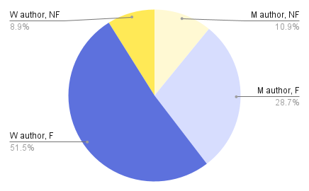

no one is talking about this
by Patricia Lockwood

A Down Home Meal for These Difficult Times
by Meron Hadero
by Patricia Lockwood
by Meron Hadero

by Cennydd Bowles

by John Berger
I read 82 fiction books (52 by women, 29 by men, 1 where I couldn't determine the author's gender*), and 20 non-fiction books.
 🌍 The authors of the books I read came from 26 different countries:Search the library catalogue of all libraries across Barnet, or find your local library.